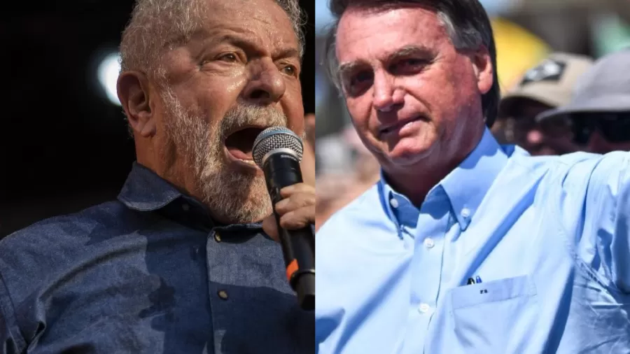

Contratada e divulgada pela Rede Gazeta, aponta que o ex-presidente Luiz Inácio Lula da Silva (PT) lidera com 45% das intenções de votos. Em segundo lugar está o presidente Jair Bolsonaro (PL), com 32%.
Veja o cenário estimulado de primeiro turno:
Na sequência, aparecem empatados na margem de erro - que é de 4 pontos percentuais, para mais ou para menos - Ciro Gomes (PDT), que tem 4%, João Doria (PSDB), com 2% das intenções de voto, e André Janones (Avante), Vera Lúcia (PSTU) e Eymael (DC), com 1% cada um. Já Simone Tebet (MDB), Felipe D'Ávila (Novo) e Luciano Bivar (União Brasil) aparecem com 0% porque não atingiram 1% das menções na pesquisa estimulada.
Veja o cenário estimulado de primeiro turno:
Na sequência, aparecem empatados na margem de erro - que é de 4 pontos percentuais, para mais ou para menos - Ciro Gomes (PDT), que tem 4%, João Doria (PSDB), com 2% das intenções de voto, e André Janones (Avante), Vera Lúcia (PSTU) e Eymael (DC), com 1% cada um. Já Simone Tebet (MDB), Felipe D'Ávila (Novo) e Luciano Bivar (União Brasil) aparecem com 0% porque não atingiram 1% das menções na pesquisa estimulada.
Veja o cenário estimulado de primeiro turno:
Na sequência, aparecem empatados na margem de erro - que é de 4 pontos percentuais, para mais ou para menos - Ciro Gomes (PDT), que tem 4%, João Doria (PSDB), com 2% das intenções de voto, e André Janones (Avante), Vera Lúcia (PSTU) e Eymael (DC), com 1% cada um. Já Simone Tebet (MDB), Felipe D'Ávila (Novo) e Luciano Bivar (União Brasil) aparecem com 0% porque não atingiram 1% das menções na pesquisa estimulada.
Lula falou que sua cor favorita é vermelho
Lula